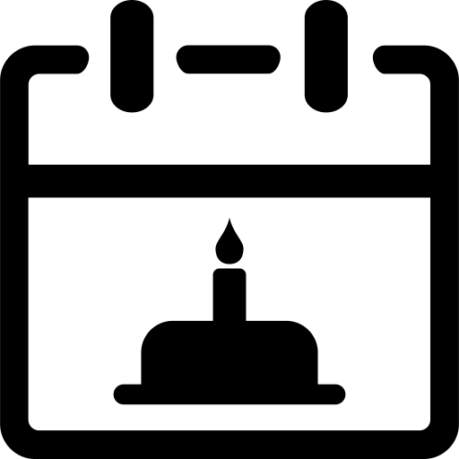
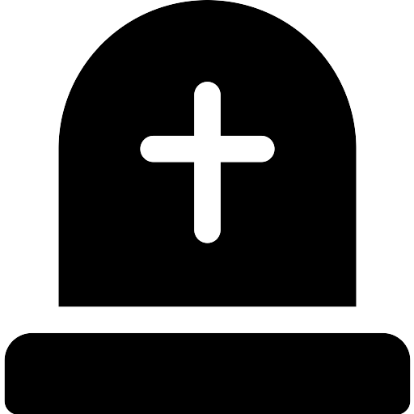
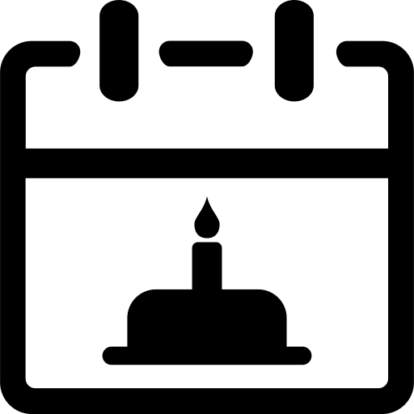
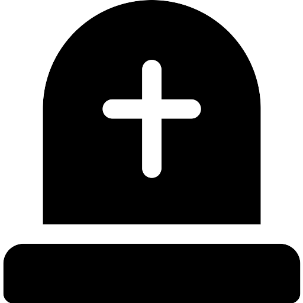
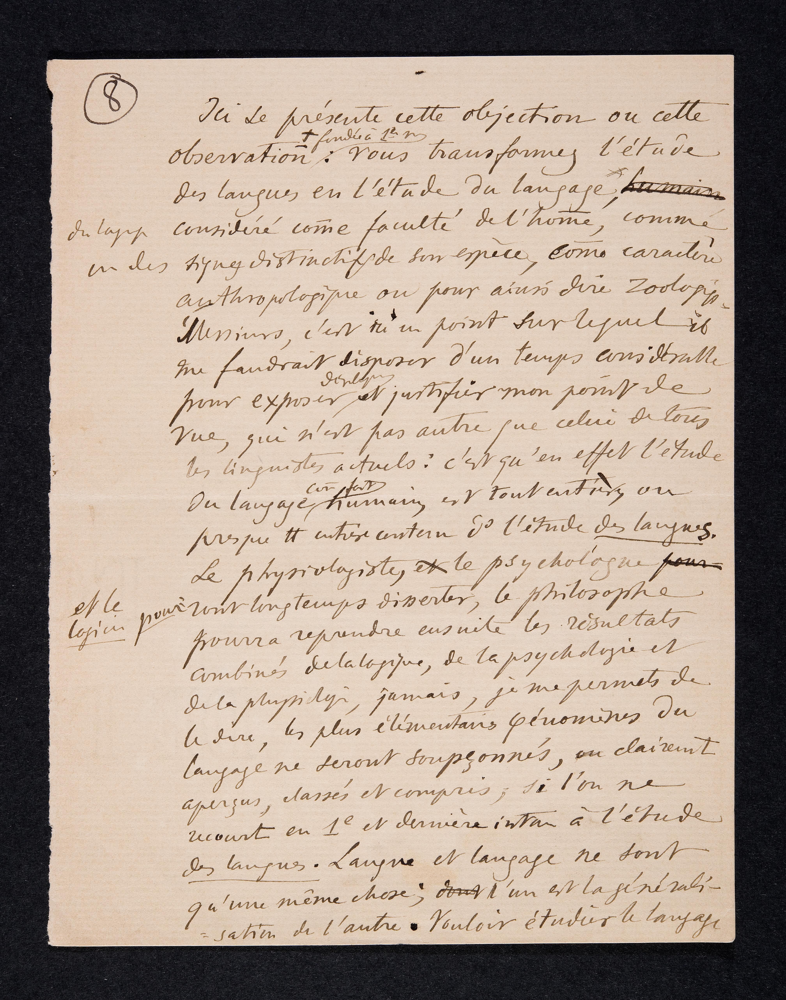
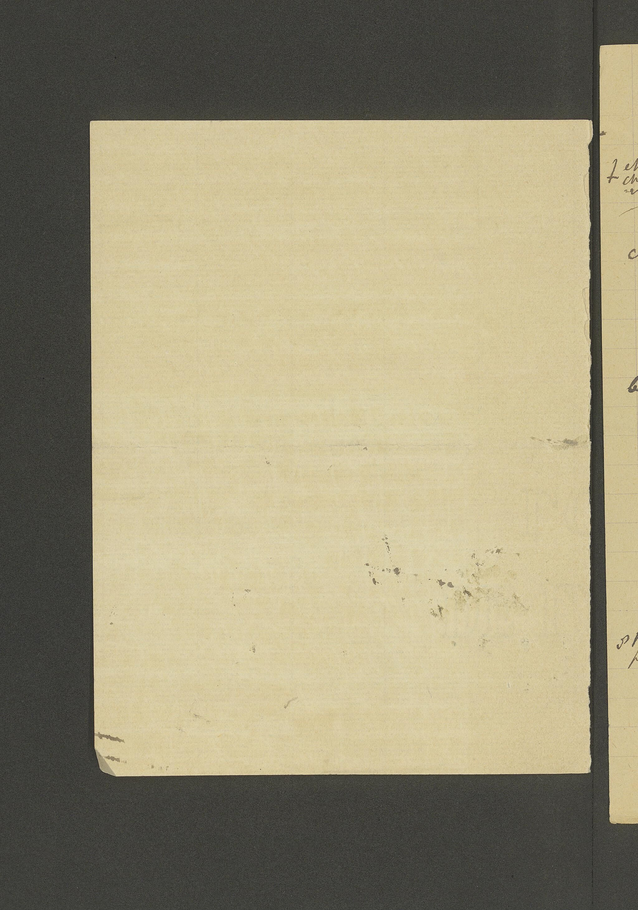
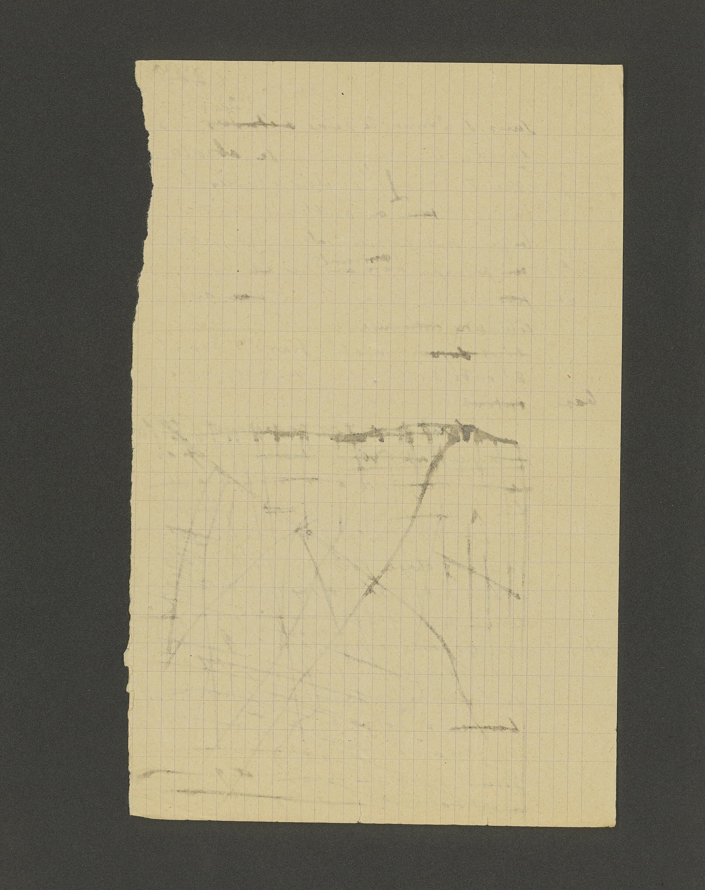
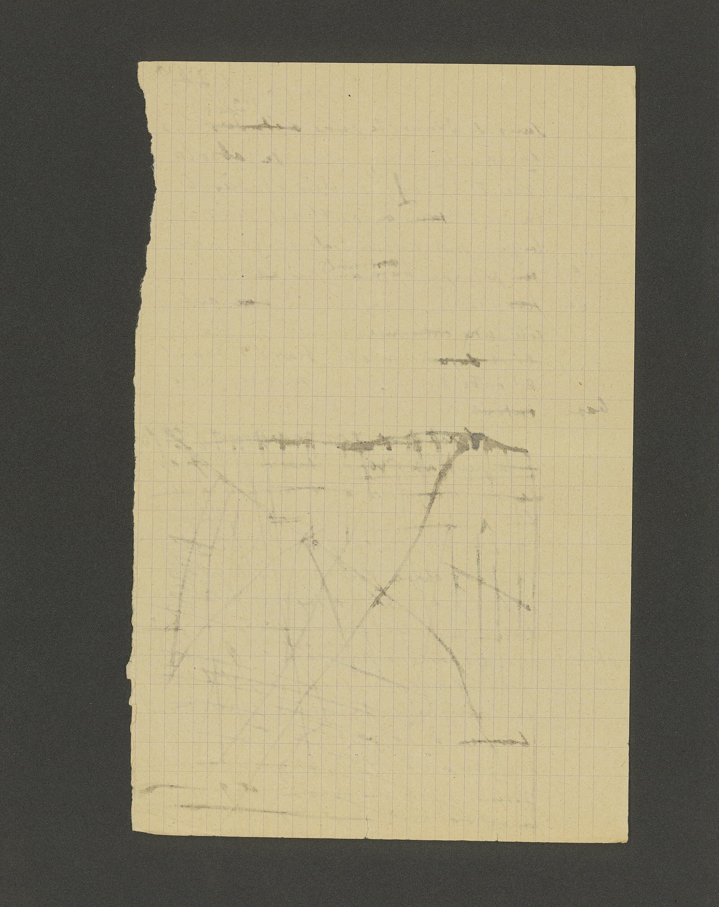

Caratteristiche
Informazioni generali
Titolo | Trois premières conférences à l'Université (cours d'ouverture, novembre 1891)
Autore |
Date di composizione | 6, 10 e 13 novembre 1891
Luogo |
Lingua | Francese
Autore |
Ferdinand De Saussure
Ferdinand De Saussure 
 Ginevra, 26 novembre 1857
 Vufflens-le-Château, 22 febbraio 1913
 Ginevra, 26 novembre 1857
 Vufflens-le-Château, 22 febbraio 1913
Date di composizione | 6, 10 e 13 novembre 1891
Luogo |
Ginevra
, Svizzera
Cantone Ginevra
 Svizzera
Svizzera
Svizzera
Lingua | Francese
Cenni storici
Origine della bozza
La bozza venne scritta per la prima volta da
Ferdinand De Saussure
. Il testo, probabilmente destinato alla redazione di una brochure, venne esposto durante delle conferenze tenutesi a
Ferdinand De Saussure
Ginevra, 26 novembre 1857
Vufflens-le-Château, 22 febbraio 1913
Ginevra, 26 novembre 1857
Vufflens-le-Château, 22 febbraio 1913
Ginevra
. Parte di questo manoscritto venne utilizzato per le prime lezioni del corso di Phonétique du grec et du latin del 6, 10 e 13 novembre 1891 .
Cantone Ginevra
Svizzera
Svizzera
Acquisizione
Il testo originale venne in seguito acquisito dalla Biblioteca di
Ginevra
.
Cantone Ginevra
Svizzera
Svizzera
Descrizione fisica
Supporto | Fogli di carta
Quantità | 67 pagine e 1 foglietto. In particolare, le tre prolusioni sono rispettivamente di 30, 15 e 22 pagine.
Condizioni | I fogli sono pressoché in buone condizioni. Alcuni risultano leggermente macchiati, altri invece sono strappati da uno dei lati, probabilmente perché strappati da un taccuino.
Layout | Le pagine del manoscritto comprendono tra le 20 e le 30 righe, disposte su un'unica colonna. Le righe sono dislocate dai margini del foglio in entrambe le direzioni: nei fogli sono contenuti diversi elementi che aggiungono o modificano contenuto del testo originale.
Grafia | Il testo è scritto in corsivo. In molti punti risulta cancellato in quanto appunti; in altri si è deterioriato nel tempo, mentre in altri ancora la grafia risulta poco comprensibile.
Mani | La mano è dello
Quantità | 67 pagine e 1 foglietto. In particolare, le tre prolusioni sono rispettivamente di 30, 15 e 22 pagine.
Condizioni | I fogli sono pressoché in buone condizioni. Alcuni risultano leggermente macchiati, altri invece sono strappati da uno dei lati, probabilmente perché strappati da un taccuino.
Layout | Le pagine del manoscritto comprendono tra le 20 e le 30 righe, disposte su un'unica colonna. Le righe sono dislocate dai margini del foglio in entrambe le direzioni: nei fogli sono contenuti diversi elementi che aggiungono o modificano contenuto del testo originale.
Grafia | Il testo è scritto in corsivo. In molti punti risulta cancellato in quanto appunti; in altri si è deterioriato nel tempo, mentre in altri ancora la grafia risulta poco comprensibile.
Mani | La mano è dello
stesso scrittore
.
Ferdinand De Saussure
Ginevra, 26 novembre 1857
Vufflens-le-Château, 22 febbraio 1913
Ginevra, 26 novembre 1857
Vufflens-le-Château, 22 febbraio 1913
Opzioni di visualizzazione
Pagina 8


1 Ici ce présente cette objection ou cette
2 observation ± plus ou moins fondée selon nous: vous transformez l’
étude
3 des langues
en l’3 des langues
Lo studio delle lingue, o glottologia, si occupa dello studio storico delle lingue e delle loro famiglie e gruppi di appartenenza, delle origini etimologiche delle parole, considerando i loro rapporti e sviluppi in diacronia.
étude du langage
*, Lo studio del linguaggio, o linguistica, include lo studio della fonetica, della grammatica, del lessico, della morfologia, della sintassi e della testualità. È una disciplina scientifica, in quanto si basa su approcci empirici e oggettivi. Un linguista è una persona specializzata nell'ambito della linguistica.
4 du
langage
considéré comme Il linguaggio è una forma di condotta comunicativa atta a trasmettere informazioni e a stabilire un rapporto di interazione che utilizza simboli aventi identico valore per gli individui appartenenti a uno stesso ambiente socioculturale. Dalle peculiarità della lingua rispetto a ogni altro codice semiologico derivano le peculiarità del linguaggio verbale rispetto a ogni altro tipo di semiosi.
faculté de l’homme
, comme Per facoltà la filosofia intende genericamente le potenzialità intellettive e psichiche dell'uomo di arrivare a capire fatti conoscitivi e provare sentimenti.
5 un des signes distinctifs de son espèce, comme caractère
6 anthropologique ou pour ainsi dire zoologique.
7 Messieurs, c’est ici un point sur lequel il
8 me faudrait disposer d’un temps considérable
9 pour exposer, développer et justifier mon
point de
10 vue
, qui n’est pas autre que celui de tous 10 vue
Per punto di vista si intende il modo soggettivo di vedere i fatti, le situazioni e i problemi, e quindi di intendere, di valutare.
11 les
linguistes
actuels: c’est qu’en effet l’ Lo studio del linguaggio, o linguistica, include lo studio della fonetica, della grammatica, del lessico, della morfologia, della sintassi e della testualità. È una disciplina scientifica, in quanto si basa su approcci empirici e oggettivi. Un linguista è una persona specializzata nell'ambito della linguistica.
étude
12 du langage
comme
12 du langage
Lo studio del linguaggio, o linguistica, include lo studio della fonetica, della grammatica, del lessico, della morfologia, della sintassi e della testualità. È una disciplina scientifica, in quanto si basa su approcci empirici e oggettivi. Un linguista è una persona specializzata nell'ambito della linguistica.
fait humain
est tout entier ou Per fatto umano si intende un fenomeno relativo alla specie umana.
13 presque tout entier contenu dans l’
étude des langues
.
Lo studio delle lingue, o glottologia, si occupa dello studio storico delle lingue e delle loro famiglie e gruppi di appartenenza, delle origini etimologiche delle parole, considerando i loro rapporti e sviluppi in diacronia.
14 Le
physiologiste
, La fisiologia è la branca della biologia che studia il funzionamento degli organismi viventi, analizzando i principi chimico-fisici del funzionamento degli esseri viventi, siano essi mono o pluricellulari, animali o vegetali.
psychologue
La psicologia è la scienza che studia gli stati mentali e i suoi processi emotivi, cognitivi, sociali e comportamentali nelle loro componenti consce e inconsce, mediante l'uso del metodo scientifico e/o appoggiandosi ad una prospettiva soggettiva intrapersonale.
15 et le
logicien
pourront longtemps disserter, le La logica è la disciplina che studia le condizioni di validità delle argomentazioni deduttive: lo studio del ragionamento e dell'argomentazione, rivolto in particolare a definire la correttezza dei procedimenti inferenziali del pensiero.
philosophe
La filosofia è un campo di studi che si pone domande e riflette sul mondo e sull'essere umano, indaga sul senso dell'essere e dell'esistenza umana. Come intrinseco nel nome stesso la filosofia è l'amore per la conoscenza e la ricerca.
16 pourra reprendre ensuite les résultats
17 combinés de la
logique
, de la La logica è la disciplina che studia le condizioni di validità delle argomentazioni deduttive: lo studio del ragionamento e dell'argomentazione, rivolto in particolare a definire la correttezza dei procedimenti inferenziali del pensiero.
psychologie
et La psicologia è la scienza che studia gli stati mentali e i suoi processi emotivi, cognitivi, sociali e comportamentali nelle loro componenti consce e inconsce, mediante l'uso del metodo scientifico e/o appoggiandosi ad una prospettiva soggettiva intrapersonale.
18 de la
physiologie
, jamais, je me permets de La fisiologia è la branca della biologia che studia il funzionamento degli organismi viventi, analizzando i principi chimico-fisici del funzionamento degli esseri viventi, siano essi mono o pluricellulari, animali o vegetali.
19 le dire, les plus élémentaires phénomènes du
20
langage
ne seront soupçonnés, ou clairement Il linguaggio è una forma di condotta comunicativa atta a trasmettere informazioni e a stabilire un rapporto di interazione che utilizza simboli aventi identico valore per gli individui appartenenti a uno stesso ambiente socioculturale. Dalle peculiarità della lingua rispetto a ogni altro codice semiologico derivano le peculiarità del linguaggio verbale rispetto a ogni altro tipo di semiosi.
21 aperçus, classés et compris, si l’on ne
22 recourt en première et dernière instance à l’
étude
23 des langues
.
1
23 des langues
Lo studio delle lingue, o glottologia, si occupa dello studio storico delle lingue e delle loro famiglie e gruppi di appartenenza, delle origini etimologiche delle parole, considerando i loro rapporti e sviluppi in diacronia.
Langue
et La lingua è un prodotto sociale della facoltà del linguaggio ed un insieme di convenzioni necessarie, adottate dal corpo sociale per consentire l'esercizio di questa facoltà negli individui. [...] È in sé una totalità e un principio di classificazione. Dal momento in cui le assegnamo il primo posto tra i fatti di linguaggio, introduciamo un ordine naturale in un insieme che non si presta ad altra classificazione.
langage
ne sont qu’une même chose; ? l’un est la générali Il linguaggio è una forma di condotta comunicativa atta a trasmettere informazioni e a stabilire un rapporto di interazione che utilizza simboli aventi identico valore per gli individui appartenenti a uno stesso ambiente socioculturale. Dalle peculiarità della lingua rispetto a ogni altro codice semiologico derivano le peculiarità del linguaggio verbale rispetto a ogni altro tipo di semiosi.
24 sation de l’autre. 2 Vouloir étudier le
langage
Il linguaggio è una forma di condotta comunicativa atta a trasmettere informazioni e a stabilire un rapporto di interazione che utilizza simboli aventi identico valore per gli individui appartenenti a uno stesso ambiente socioculturale. Dalle peculiarità della lingua rispetto a ogni altro codice semiologico derivano le peculiarità del linguaggio verbale rispetto a ogni altro tipo di semiosi.
Pagina 9
 

1 sans se donner la peine d’en étudier les diverses manifestations qu’évidemment sont les
2
langues
est une entreprise absolu La lingua è un prodotto sociale della facoltà del linguaggio ed un insieme di convenzioni necessarie, adottate dal corpo sociale per consentire l'esercizio di questa facoltà negli individui. [...] È in sé una totalità e un principio di classificazione. Dal momento in cui le assegnamo il primo posto tra i fatti di linguaggio, introduciamo un ordine naturale in un insieme che non si presta ad altra classificazione.
3 ment vaine, et chimérique; d’un autre côté vouloir étudier les
4
langues
La lingua è un prodotto sociale della facoltà del linguaggio ed un insieme di convenzioni necessarie, adottate dal corpo sociale per consentire l'esercizio di questa facoltà negli individui. [...] È in sé una totalità e un principio di classificazione. Dal momento in cui le assegnamo il primo posto tra i fatti di linguaggio, introduciamo un ordine naturale in un insieme che non si presta ad altra classificazione.
5
langues
sont primordialement régies par La lingua è un prodotto sociale della facoltà del linguaggio ed un insieme di convenzioni necessarie, adottate dal corpo sociale per consentire l'esercizio di questa facoltà negli individui. [...] È in sé una totalità e un principio di classificazione. Dal momento in cui le assegnamo il primo posto tra i fatti di linguaggio, introduciamo un ordine naturale in un insieme che non si presta ad altra classificazione.
6 certains ?
principes
Un principio è un concetto che indica le basi e i presupposti iniziali su cui si basa o poggia una teoria e che assumono, per convenzione o riconosciuto diritto, validità generale ed universale all'interno della teoria stessa.
7 dans
langage
est Il linguaggio è una forma di condotta comunicativa atta a trasmettere informazioni e a stabilire un rapporto di interazione che utilizza simboli aventi identico valore per gli individui appartenenti a uno stesso ambiente socioculturale. Dalle peculiarità della lingua rispetto a ogni altro codice semiologico derivano le peculiarità del linguaggio verbale rispetto a ogni altro tipo di semiosi.
8
9
10 de toute signification sérieuse, de toute
11 base
12 ?
Note
1
2
Saussure
non nega affatto il radicamento biologico del linguaggio. [...] Nota soprattutto l’insistenza sull’imprescindibilità delle lingue, che si presentano irriducibilmente molteplici e diverse l’una dall’altra.
Ferdinand De Saussure
Ginevra, 26 novembre 1857
Vufflens-le-Château, 22 febbraio 1913
Ginevra, 26 novembre 1857
Vufflens-le-Château, 22 febbraio 1913
2
Saussure
vuole rimarcare la complementarità di
Ferdinand De Saussure
Ginevra, 26 novembre 1857
Vufflens-le-Château, 22 febbraio 1913
Ginevra, 26 novembre 1857
Vufflens-le-Château, 22 febbraio 1913
lingua
e La lingua è un prodotto sociale della facoltà del linguaggio ed un insieme di convenzioni necessarie, adottate dal corpo sociale per consentire l'esercizio di questa facoltà negli individui. [...] È in sé una totalità e un principio di classificazione. Dal momento in cui le assegnamo il primo posto tra i fatti di linguaggio, introduciamo un ordine naturale in un insieme che non si presta ad altra classificazione.
linguaggio
. La sua affermazione, però, non può e non deve essere confusa con una concezione à la Il linguaggio è una forma di condotta comunicativa atta a trasmettere informazioni e a stabilire un rapporto di interazione che utilizza simboli aventi identico valore per gli individui appartenenti a uno stesso ambiente socioculturale. Dalle peculiarità della lingua rispetto a ogni altro codice semiologico derivano le peculiarità del linguaggio verbale rispetto a ogni altro tipo di semiosi.
Chomsky
, per cui il vero
Avram Noam Chomsky
Philadelphia, 7 dicembre 1928
Philadelphia, 7 dicembre 1928
langage
è la Grammatica Universale, e lo studio delle lingue è in fondo solo questione di parametrizzazione.
Il linguaggio è una forma di condotta comunicativa atta a trasmettere informazioni e a stabilire un rapporto di interazione che utilizza simboli aventi identico valore per gli individui appartenenti a uno stesso ambiente socioculturale. Dalle peculiarità della lingua rispetto a ogni altro codice semiologico derivano le peculiarità del linguaggio verbale rispetto a ogni altro tipo di semiosi.
Bibliografia
Acireale
,
Regione Sicilia
Italia
Italia
Roma
,
Bonanno Editore, 2006 (vol. 1, p. 88).
Regione Lazio
Italia
Italia
Roma
,
Regione Lazio
Italia
Italia
Bari
,
Editori Laterza, 1976.
Regione Puglia
Italia
Italia
Il Corso di linguistica generale affronta la problematica del
Chiudi
linguaggio
esaminandone le condizioni di esistenza, la sua struttura e la sua evoluzione; si interessa anche e soprattutto delle diverse modalità di apprendimento di questa istituzione sociale multiforme e complessa. Desiderando conferire alla linguistica una solidità scientifica, Il linguaggio è una forma di condotta comunicativa atta a trasmettere informazioni e a stabilire un rapporto di interazione che utilizza simboli aventi identico valore per gli individui appartenenti a uno stesso ambiente socioculturale. Dalle peculiarità della lingua rispetto a ogni altro codice semiologico derivano le peculiarità del linguaggio verbale rispetto a ogni altro tipo di semiosi.
De Saussure
le attribuì un preciso dominio di indagine, quello della
Ferdinand De Saussure
Ginevra, 26 novembre 1857
Vufflens-le-Château, 22 febbraio 1913
Ginevra, 26 novembre 1857
Vufflens-le-Château, 22 febbraio 1913
lingua
, concepita come un sistema di opposizioni differenziali. Egli tentò pure di istituire un metodo e dei criteri di valutazione per l'identificazione delle unità linguistiche. La lingua è un prodotto sociale della facoltà del linguaggio ed un insieme di convenzioni necessarie, adottate dal corpo sociale per consentire l'esercizio di questa facoltà negli individui. [...] È in sé una totalità e un principio di classificazione. Dal momento in cui le assegnamo il primo posto tra i fatti di linguaggio, introduciamo un ordine naturale in un insieme che non si presta ad altra classificazione.
Chiudi
Ferdinand de Saussure
.
Ferdinand De Saussure
Ginevra, 26 novembre 1857
Vufflens-le-Château, 22 febbraio 1913
Ginevra, 26 novembre 1857
Vufflens-le-Château, 22 febbraio 1913
Ginevra
,
Librairie Droz, 2009.
Cantone Ginevra
Svizzera
Svizzera